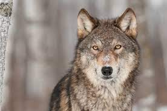
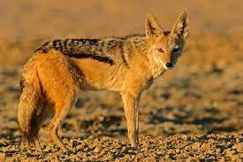
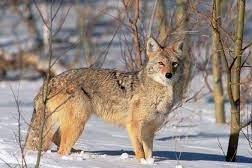
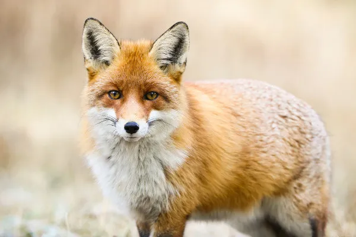

Os canídeos são os animais pertencentes à família Canidae, que engloba cães, lobos, chacais, coiotes e raposas. São divididos em 35 espécies espalhadas pelo mundo, em todos os continentes (exceto Antártica). Geralmente caçam sozinhos ou em pares, mas há espécies que formam grupos colaborativos.
| Animal | Expectativa de vida | Período gestacional | Altura | Imagem |
|---|---|---|---|---|
| Cachorro | 10-13 anos | 58-68 dias | 15-110cm | |
| Lobo | 13 anos | 62-75 dias | 1-1,6m |  |
| Chacal | 14-16 anos | 57-70 dias | 69-81cm |  |
| Coiote | 6 anos | 60-63 dias | 58-66cm |  |
| Raposa | 3-4 anos | 51-53 dias | 35-40cm |  |
Clique nas imagens para visualização das espécies de cada animal.